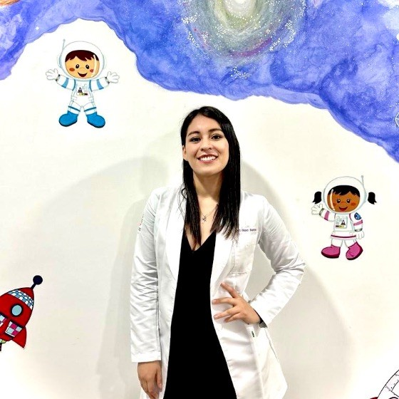

Pediatra & Oncóloga Pediátrica
Dra. Diana Santos Márquez
Atención pediátrica especializada enfocada en el cuidado integral, diagnóstico oportuno y tratamiento del cáncer en niños y adolescentes. Formada en la BUAP, el Centro Médico Nacional de Occidente (IMSS) y la Universidad de Guadalajara.

Explore el portal
Un Portal Profesional Integral
Desde la trayectoria académica hasta las publicaciones científicas, cada sección ha sido diseñada para brindar información confiable a colegas médicos y a padres de familia.
Trayectoria Académica
Más de una década de formación continua: desde la licenciatura en la BUAP hasta la subespecialidad en Oncología Pediátrica en el CMNO, con aval de la Universidad de Guadalajara.
Ver trayectoria completaÁreas de Especialidad
Atención en cáncer infantil y cuidado pediátrico general. Conozca cómo trabajamos en equipo por la salud de sus hijos.
Explorar especialidadesPublicaciones Científicas
Acceso a los trabajos de investigación, artículos médicos y reportes de casos clínicos publicados en revistas indexadas.
Ver publicacionesFilosofía de Atención
Compromiso con la Salud Infantil
La medicina pediátrica, y en particular la oncología infantil, requiere no sólo un sólido conocimiento clínico, sino también una profunda sensibilidad humana. Cada niño es un paciente único que merece un abordaje integral, ético y basado en la mejor evidencia disponible.
Mi práctica se fundamenta en la colaboración interdisciplinaria, la comunicación transparente con las familias y la actualización continua en los avances de la oncología pediátrica.
Ética y Rigor Científico
Decisiones clínicas sustentadas en guías internacionales y protocolos institucionales de vanguardia.
Abordaje Multidisciplinario
Trabajo coordinado con cirugía, radioterapia, patología, psicología y trabajo social para una atención integral.
Comunicación Empática
Acompañamiento cercano a las familias, con información clara, honesta y compasiva en cada etapa del proceso.